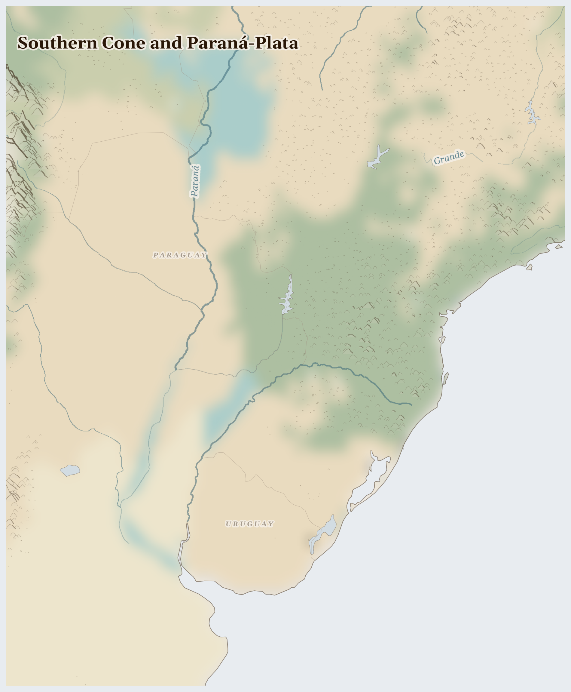

Southern Cone and Paraná-Plata
Brazil, Argentina, Falkland Islands and 2 more countries
Neotropic
The wide grassy plains at the bottom of South America — the pampas — where cowboys called gauchos ride and cattle graze to the horizon. Above them, in the high desert, lie flat white salt pans that shine like mirrors, and far south the wind never seems to stop.
How Life Works Here
This is one of the world's great food baskets: oceans of soybeans and herds of cattle feed people and animals across the planet. High in the salt pans lies lithium — the light metal inside every phone and electric-car battery — scooped from salty water left to dry in the sun.
Large-scale estancia operators and tenant farmers, Port and grain-elevator workers in Rosario-Santa Fe corridor, Campesino smallholders resisting land consolidation (squeezed by Bunge, ADM, Cargill).
Barge crews and river pilots (operating 3,400km navigable waterway), Riparian fishing communities (artisanal dorado and surubí fishery), Irrigating farmers along the river corridor.
Mapuche communities defending ancestral territories against fracking operations, Patagonian ranchers and farmers (water contamination from fracking wastewater), Energy workers in the Neuquén basin in Argentina.
What Is Happening
Growing so much soy has pushed farming onto land that belonged to Indigenous and country families, and getting lithium from the salt pans uses enormous amounts of water in a place that is already dry — so the Kolla and Mapuche communities who live there worry for their springs. It is a real worry, and fair to name. But those communities are not silent: they gather, they ask hard questions of the big companies, and they insist that their water be counted before the metal is taken.
Something Wonderful
After rain, the salt flats become the biggest mirror on Earth — a thin sheet of water turns miles of white ground into a perfect reflection of the sky, so you can't tell where the ground ends and the clouds begin. People walk there and look like they're standing on the sky.
Let's Do Something Together
Weather Diary
For three days, look outside each morning and draw the weather — sun, clouds, rain, wind. Is it the same or different each day? In some places, the weather has changed so much that the rain comes at the wrong time, or does not come at all. Farmers cannot grow food when the seasons change.
- paper
- crayons or markers
For grown-ups
Climate variability disrupts agricultural calendars that communities have relied on for generations. When rains fail or come at unexpected times, planting windows close and harvests fail.
Let Us Pray Together
God, send rain where it is needed. Help farmers know when to plant.
Leader: We pray for Brazil. For Brazil, where multiple pressures are interacting and the situation is escalating.
All: Lord, hear our prayer.
Leader: We pray for the helpers. For humanitarian workers and missionaries in Southern Cone and Paraná-Plata.
All: Lord, hear our prayer.
Leader: We pray for seeds of hope. For every act of resistance and care in Southern Cone and Paraná-Plata.
All: Lord, hear our prayer.
O praise the Lord, all you nations; praise him, all you peoples. For great is his steadfast love towards us, and the faithfulness of the Lord endures for ever. Alleluia.
Collect
Lord of all power and might, the author and giver of all good things: graft in our hearts the love of your name, increase in us true religion, nourish us with all goodness, and of your great mercy keep us in the same; through Jesus Christ your Son our Lord, who is alive and reigns with you, in the unity of the Holy Spirit, one God, now and for ever.
Amen.
Talk About It
The metal for phone batteries needs a lot of water, in a place with very little. If you could only have one — more gadgets, or enough clean water for everyone — which matters more, and why?
One Thing We Can Do
Every rechargeable battery holds a little lithium that may have dried under the desert sun. When you charge something tonight, pray for the salt-pan communities — that their springs stay full.